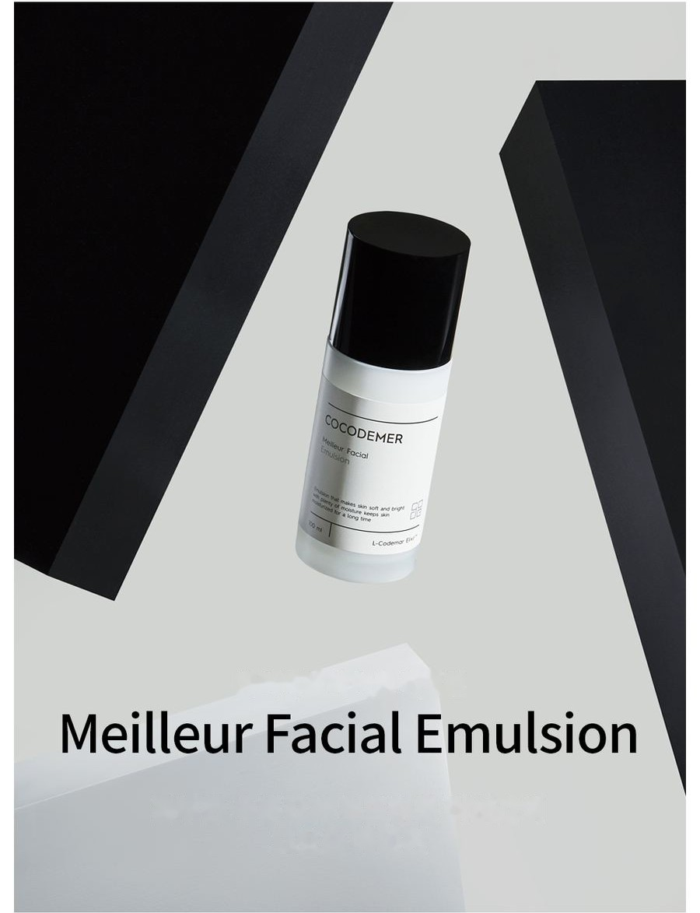
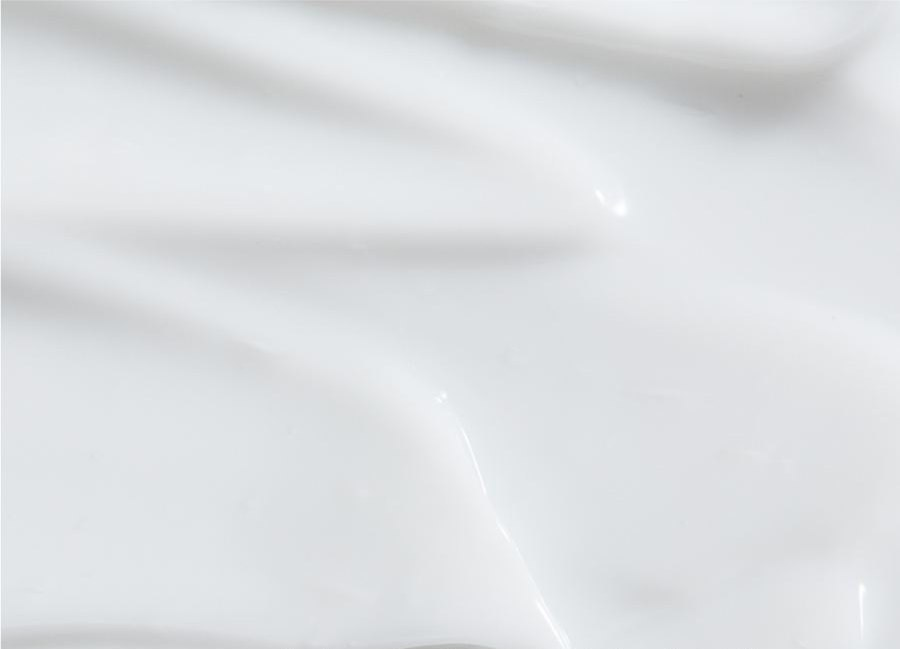
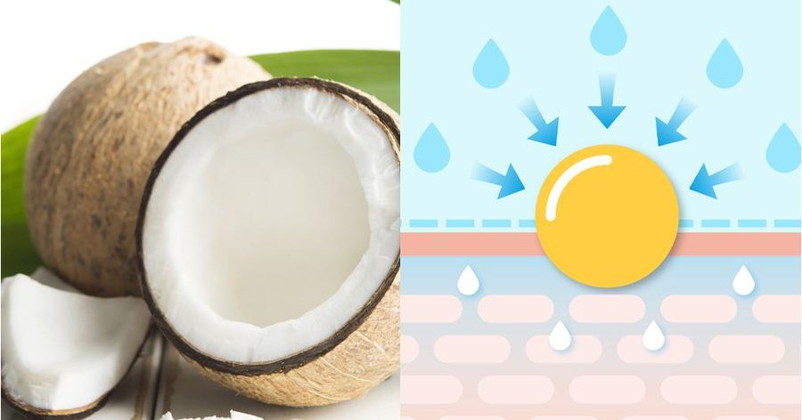
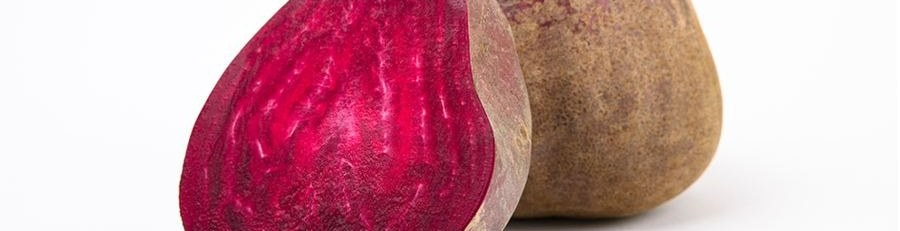
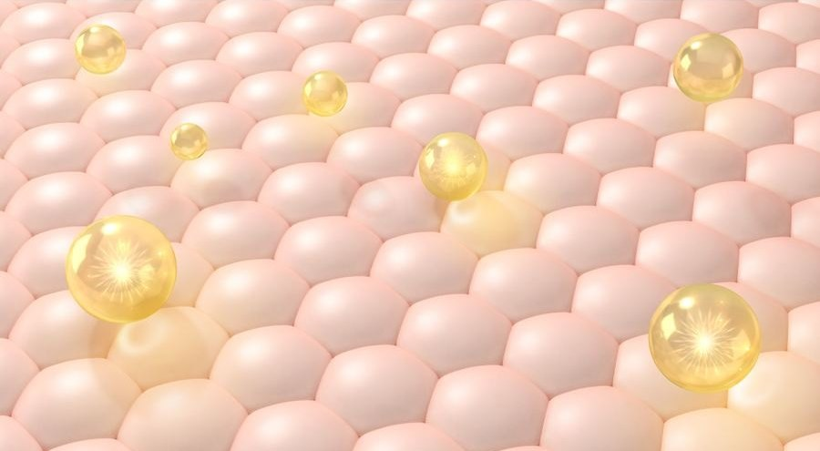

COCODEMER Meilleur Facial Emulsion
| Isi | 100ml |
|---|---|
| Cocok untuk | Semua jenis kulit |
| Teknologi utama | L-CODEMAR ELIXIR™ |
| Produsen · Distributor penanggung jawab | JUNGCOS CO., LTD. / COCODEMER CO., LTD. |
Produk ini dikembangkan sebagai bagian dari lini kosmetik khusus kami. Saat ini tidak dijual. Untuk pertanyaan mengenai produksi ulang atau pembaruan, silakan hubungi kami melalui Pertanyaan B2B.

Emulsi sangat melembapkan, kaya kandungan air dan lembut saat disentuh
Merawat lapisan pelindung kulit secara menyeluruh dan mengunci kelembapan dengan kuat
Niacinamide dan Adenosine membantu memperbaiki pigmentasi dan kerutan dalam satu langkah.
Nutrisi dan kelembapan mencegah kekeringan serta memberikan minyak dan air yang dibutuhkan kulit, untuk kulit yang halus dan sehat.

Jaringan gel kristal cair berbasis glukosa: sentuhan yang kaya dan empuk serta hasil akhir bernutrisi yang melekat erat pada kulit
Kompleks 20 asam amino: menenangkan kulit dan memberikan hidrasi
Peptida kolagen & Botox, bioflavonoid: elastisitas kulit dan meredakan iritasi
Basis minyak selembut sutra berpadu dengan kesegaran kelembapan yang sejuk di ujung jari, untuk hasil akhir yang halus dan terhidrasi tanpa rasa lengket.
* Keterangan di atas hanya berlaku untuk bahan tertentu tersebut.
Kode bahan aktif utama
- MoMelembapkanPelembap
- AwAnti-kerutanAnti-penuaan
- WhPemutihanPemutihan
- TbMeredakan masalah kulitMeredakan masalah kulit
- BsBasisMelembutkan kulit

Kandungan air 80% dan oligosakarida membentuk lapisan pelindung yang mencegah hilangnya kelembapan dan menjaga kemampuan kulit menahan air, sehingga membantu kulit tetap terhidrasi dan terhindar dari kekeringan.

Berasal dari akar bit, bahan ini menenangkan kulit sensitif dan membantu mengembalikan fungsi kulit yang melemah ke kondisi normal.

Bahan Botox topikal yang merangsang produksi kolagen dan elastin. Pada kulit yang kehilangan kekencangannya karena penurunan keduanya, bahan ini membantu memulihkan elastisitas dan memperbaiki kerutan.
Turunan vitamin B3 yang larut air. Bahan ini menghambat aktivasi tirosinase untuk mencegah pembentukan melanin dan menekan pigmentasi, serta mengurangi senyawa yang mengoksidasi kolagen — mencerahkan warna kulit dan membantu mencegah noda gelap.
* Penjelasan di atas mengenai bahan, bukan produk jadi.
Lihat referensi bahan →
L-CODEMAR ELIXIR™
Teknologi eksklusif COCODEMER.
Teknologi enkapsulasi emulsi nano-gel berlapis kami yang tiada tanding menyatukan bahan aktif utama — air kelapa, fitosterol, 20 jenis asam amino, dan ekstrak madu — dalam kompleks yang stabil. Kompleks tersebut kemudian dibentuk menjadi formula liposom yang ramah kulit dan menyerupai struktur kulit itu sendiri, sehingga memaksimalkan efisiensi penghantaran ke dalam kulit.
L-Codemar Elixir™ memperkuat ikatan antarsel kulit. Bahan ini memulihkan lapisan pelindung kulit yang rusak dan membentuk lapisan pelindung yang kuat, sehingga kelembapan bertahan lebih lama.

Teks dalam gambar di atas
L-CODEMAR ELIXIR™
- AIR KELAPA
- EKSTRAK MADU
- 20 JENIS ASAM AMINO
- FITOSTEROL

Teks dalam gambar di atas
- Mikroba, debu halus, debu kuning, polutan, dan polusi udara
- Kehilangan air berlebih
Kulit rusak
Lipid antarsel yang rusak melemahkan ikatan antarsel epidermis
- Lipid antarsel yang ditambahkan ↑
- Bahan aktif
- Menangkal stres eksternal dan polutan
- Kehilangan air berkurang
Kulit sehat
Lipid yang terisi kembali memulihkan matriks antarsel → ikatan antarsel menjadi lebih kuat
Cara pemakaian
- Tuang secukupnya dengan satu atau dua kali pompa.
- Ratakan dengan lembut dari bagian tengah wajah ke arah luar, mengikuti arah alami tekstur kulit.
Merawat lapisan pelindung kulit secara menyeluruh dan mengunci kelembapan dengan kuat
Niacinamide dan Adenosine membantu memperbaiki pigmentasi dan kerutan dalam satu langkah.
Nutrisi dan kelembapan mencegah kekeringan serta memberikan minyak dan air yang dibutuhkan kulit, untuk kulit yang halus dan sehat.
Jaringan gel kristal cair berbasis glukosa: sentuhan yang kaya dan empuk serta hasil akhir bernutrisi yang melekat erat pada kulit Kompleks 20 asam amino: menenangkan kulit dan memberikan hidrasi Peptida kolagen & Botox, bioflavonoid: elastisitas kulit dan meredakan iritasi
Basis minyak selembut sutra berpadu dengan kesegaran kelembapan yang sejuk di ujung jari, untuk hasil akhir yang halus dan terhidrasi tanpa rasa lengket.
Kandungan air 80% dan oligosakarida membentuk lapisan pelindung yang mencegah hilangnya kelembapan dan menjaga kemampuan kulit menahan air, sehingga membantu kulit tetap terhidrasi dan terhindar dari kekeringan.
Berasal dari akar bit, bahan ini menenangkan kulit sensitif dan membantu mengembalikan fungsi kulit yang melemah ke kondisi normal.
Bahan Botox topikal yang merangsang produksi kolagen dan elastin. Pada kulit yang kehilangan kekencangannya karena penurunan keduanya, bahan ini membantu memulihkan elastisitas dan memperbaiki kerutan.
Turunan vitamin B3 yang larut air. Bahan ini menghambat aktivasi tirosinase untuk mencegah pembentukan melanin dan menekan pigmentasi, serta mengurangi senyawa yang mengoksidasi kolagen — mencerahkan warna kulit dan membantu mencegah noda gelap.
* Penjelasan di atas mengenai bahan, bukan produk jadi.
L-CODEMAR ELIXIR™
Teknologi eksklusif COCODEMER. Teknologi enkapsulasi emulsi nano-gel berlapis kami yang tiada tanding menyatukan bahan aktif utama — air kelapa, fitosterol, 20 jenis asam amino, dan ekstrak madu — dalam kompleks yang stabil. Kompleks tersebut kemudian dibentuk menjadi formula liposom yang ramah kulit dan menyerupai struktur kulit itu sendiri, sehingga memaksimalkan efisiensi penghantaran ke dalam kulit. L-Codemar Elixir™ memperkuat ikatan antarsel kulit. Bahan ini memulihkan lapisan pelindung kulit yang rusak dan membentuk lapisan pelindung yang kuat, sehingga kelembapan bertahan lebih lama.
① Tuang secukupnya dengan satu atau dua kali pompa. ② Ratakan dengan lembut dari bagian tengah wajah ke arah luar, mengikuti arah alami tekstur kulit.
| Isi bersih (volume atau berat) | 100ml |
|---|---|
| Cocok untuk | Semua jenis kulit |
| Masa simpan / masa pakai setelah dibuka | 30 bulan sejak tanggal produksi; gunakan dalam 12 bulan setelah dibuka |
| Cara pemakaian | Pagi dan malam, setelah toner, tuang secukupnya ke telapak tangan dan ratakan perlahan pada kulit, mengikuti arah alami teksturnya. |
| Produsen kosmetik | JUNGCOS CO., LTD. |
| Distributor penanggung jawab | COCODEMER CO., LTD. |
| Negara asal | Republik Korea |
| Komposisi lengkap (INCI) | Cocos Nucifera (Coconut) Water, Water, Glycerin, Caprylic/Capric Triglyceride, Hydrogenated Poly(C6-14 Olefin), Methylpropanediol, Butylene Glycol, Betaine, Niacinamide, Polyglyceryl-3, Methyl Glucose Distearate, Raffinose, Centella Asiatica Extract, Ficus Carica (Fig) Fruit Extract, 1,2-Hexanediol, Dimethicone, Hydrogenated Polydecene, Panthenol, Honey Extract, Carthamus Tinctorius (Safflower) Seed Oil, Hydrogenated Lecithin, Oenothera Biennis (Evening Primrose) Oil, Sodium Hyaluronate, Acetyl Hexapeptide-8, Adenosine, Alanine, Allantoin, Arachidic Acid, Arginine, Aspartic Acid, Bioflavonoids, Carbomer, Carnitine, Carnosine, Ceramide NP, Cetearyl Alcohol, Cetyl Ethylhexanoate, Citrulline, Creatine, Cyclopentasiloxane, Dimethiconol, Disodium EDTA, Ethylhexylglycerin, Glucosyl Hesperidin, Glutamic Acid, Glutamine, Glyceryl Stearate, Glycine, Hydrogenated Phosphatidylcholine, Hydroxyacetophenone, Inositol, Isoleucine, Lauric Acid, Leucine, Limonene, Methionine, Myristic Acid, Neopentyl Glycol, Diheptanoate, Oleic Acid, Ornithine, Palmitic Acid, Palmitoyl Pentapeptide-4, PEG-100 Stearate, Phenylalanine, Phytosterols, Polyglyceryl-10 Myristate, Polyglyceryl-2 Stearate, Polyquaternium-51, Polysorbate 20, Proline, Propanediol, Serine, Sodium Polyacrylate, Sodium Stearoyl Glutamate, Squalane, Stearic Acid, Threonine, Tranexamic Acid, Trehalose, Tromethamine, Tryptophan, Tyrosine, Valine, Xanthan Gum, Fragrance (Parfum) |
| Persetujuan kosmetik fungsional | Membantu mencerahkan kulit. Membantu memperbaiki kerutan kulit. |
| Peringatan | 1. Jika pada area pemakaian timbul bintik merah, bengkak, gatal, atau reaksi tidak normal lainnya selama atau setelah pemakaian, atau setelah terpapar sinar matahari langsung, konsultasikan dengan dokter spesialis. 2. Hindari pemakaian pada kulit yang lecet atau luka. 3. Penyimpanan dan penanganan a) Jauhkan dari jangkauan anak-anak. b) Simpan terhindar dari sinar matahari langsung. |
| Jaminan kualitas | Apabila terdapat cacat, kompensasi diberikan sesuai Standar Penyelesaian Sengketa Konsumen yang diterbitkan oleh Komisi Perdagangan Adil Korea. |
| Layanan konsumen | 010-3307-9341 / cocodemer@cocodemer.co.kr |
* Pencantuman wajib berdasarkan peraturan pelabelan dan iklan kosmetik Korea. Ini adalah terjemahan referensi; untuk deklarasi komposisi resmi, CPSR, atau CoA, silakan hubungi kami melalui pertanyaan B2B.